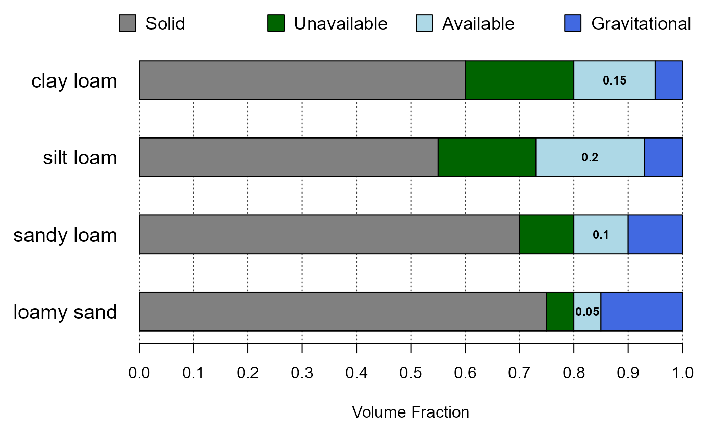

plotAvailWater.RdGenerate a simplistic diagram of the various fractions of water held within soil pore-space.
plotAvailWater(x, width = 0.25, cols = c(grey(0.5), "DarkGreen", "LightBlue", "RoyalBlue"), name.cex = 0.8)
| x | a |
|---|---|
| width | vertical width of each bar graph |
| cols | a vector of colors used to symbolize 'solid phase', 'unavailable water', 'available water', and 'gravitational water' |
| name.cex | character scaling of horizon names, printed on left-hand side of figure |
# demonstration s <- data.frame( name=c('loamy sand', 'sandy loam', 'silt loam', 'clay loam'), pwp=c(0.05, 0.1, 0.18, 0.2), fc=c(0.1, 0.2, 0.38, 0.35), sat=c(0.25, 0.3, 0.45, 0.4)) s$solid <- with(s, 1-sat) par(mar=c(5, 6, 0.5, 0.5)) plotAvailWater(s, name.cex=1.25)# use some real data from SSURGO# NOT RUN { library(soilDB) q <- "SELECT hzdept_r as hztop, hzdepb_r as hzbottom, hzname as name, wsatiated_r/100.0 as sat, wthirdbar_r/100.0 as fc, wfifteenbar_r/100.0 as pwp, awc_r as awc FROM chorizon WHERE cokey IN (SELECT cokey from component where compname = 'dunstone') AND wsatiated_r IS NOT NULL ORDER BY cokey, hzdept_r ASC;" x <- SDA_query(q) x <- unique(x) x <- x[order(x$name), ] x$solid <- with(x, 1-sat) par(mar=c(5, 5, 0.5, 0.5)) plotAvailWater(x) # }